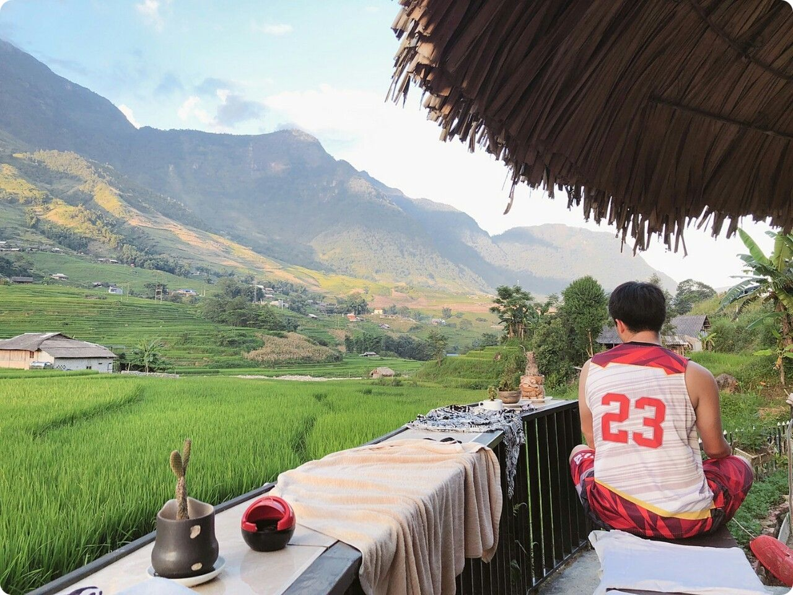

自我介紹
-
可以進行簡易的編輯，內建 5 種濾鏡，影片秒數有3秒、5秒、10秒可以選擇，拍完的當下可
成長背景
我叫林廷瑋，生長於雲林風情純樸的水林鄉蕃薯村，國中畢業後，考量就業導向以及個人興趣，應屆選擇了五專就讀。畢業於國立臺中科技大學資訊管理系。家中有四位成員，父親為畜牧業，母親則為家管在家中幫忙父親，姐姐目前則是畢業於逢甲大學行銷系，已在臺中工作中。還依稀記得莫拉克颱風肆虐台灣，雲林也無一倖免，因雲林地層下陷的問題，所以淹水特別嚴重，爸媽在大雨中辛苦的將鵝趕到農舍裡，真的很辛苦，因此來臺中之後，我住在學校宿舍五年替爸媽省了不少的房租，在二技時也靠著自己打工支付房租跟越南遊學團的費用，我希望我可以讓我的爸媽過上好的生活。
在我的眼中辛苦的父親和母親是非常偉大的，所以只要我回到家需要清理農舍的時候，我也會一起幫忙，這使我養成了刻苦耐勞的個性，加上父母親非常的重視品德教育、自律能力及學習的態度，因此父親和母親就要求我們要有良好的品格，尊重每個人的性格、意見和隱私，學習上則是要求做好每一件事，面對事情要有毅力，不要輕言放棄，最重要的是對自己做過的事負責。在這樣的家庭成長環境下，因此養成了我刻苦耐勞、自律、主動學習和負責任的特質，使我在學業上都有不錯的成績表現。
個人特質
因為父親和母親的關係下，良好的品格已是我們家庭奉行的理念，在這樣的環境中，培養出我良好品格的特質。尤其是對於同儕方面，皆會尊重大家的意見，與同儕相處融洽，只要我有能力多幫忙朋友的，我一定盡量地去幫忙。
在學習專業科目的過程中會發現到自己的不足，而在課餘時間自主學習不足的部分，另外為了增加本身在職場的就業能力，則是在閒暇時間考取的Word電腦軟體乙級的證照，除此之外我也有購買一些網頁前端的教學，讓我在程式撰寫方面能更加精進。
求學經歷
我叫林廷瑋，我就讀於國立臺中科技大學二技部資訊管理系，專長是程式撰寫、軟體應用，程式撰寫主要是前端的美化部分，在軟體文書處理如：Word、PowerPoint等具有丙級電腦軟體應用。在2017年3月時，則是利用閒暇時間考取了Word電腦軟體乙級的證照，除了資管背景讓我在電腦操作沒有問題外，近期也在密集準備英文證照，成為一位國際人才。我來自雲林的一個小村落，家中小康，跳脫原本的舒適圈，隻身一人來到臺中生活，在學校宿舍中；學到了許多事情，第一次的洗衣服，第一次跟不認識的人睡在一起，這讓我有了獨立生活的能力，也讓我學會了怎麼與人相處，而在學校當中，我最愛的運動是籃球，因為團隊合作使我對籃球充滿熱情，而運動則是可以讓我有體力去做我想要做的事；在就學期間中的暑假，我利用大專生可以暑假當兵的機會， 當完了兵之後，短短數月我學到了團體生活跟忍耐等等，相信對於職場上一定也會有所幫助的。
五專生活中，因為有別於高中職不同的學制，故有了許多的思想碰撞，磕磕碰碰的慢慢往前進，不過正因為如此，我比別人多了一份認真打拼的精神，個性開朗，待人誠懇的性格使我有幸的在班上擔任了四次班代一次副班代，從班代的職務中讓我學習到負責任是一件非常重要的事情，也因為責任感使我不斷成長和學習。系學會中則擔任器材長的職位，學習如何接洽廠商器材讓我不再怕生，學會跟陌生人溝通，相信這在職場當中都是很重要的能力。我相信無論在學校上課，或是在外面工作，最需要的就是熱忱和有一顆肯學習的心，如上述這些在學校、宿舍、當兵的經驗，讓我學習到很多待人處事及責任感，寫程式永遠都在學習，但只要有一顆積極態度的心，相信問題一定迎刃而解。
-
可以進行簡易的編輯，內建 5 種濾鏡，影片秒數有3秒、5秒、10秒可以選擇，拍完的當下可
-
本產品可以兼容 i-type 及 600 相片，各大網路平台皆有販售。
-
因商品封條多為一次性包裝，商品退貨時必須回復原狀，亦即必須回復至您收到商品時的原始狀態，且會視回收的商品狀態另外酌收額外的整新費用，請您務必確認有購買需求後再行拆封，感謝您的配合。
-
不用，取出後稍微搖晃，相片與空氣接觸數秒後便會產生圖像顏色。
-
可以選擇超商取貨及宅配，付款方式有銀行轉帳及信用卡支付。
-
因商品封條多為一次性包裝，商品退貨時必須回復原狀，亦即必須回復至您收到商品時的原始狀態，且會視回收的商品狀態另外酌收額外的整新費用，請您務必確認有購買需求後再行拆封，感謝您的配合。